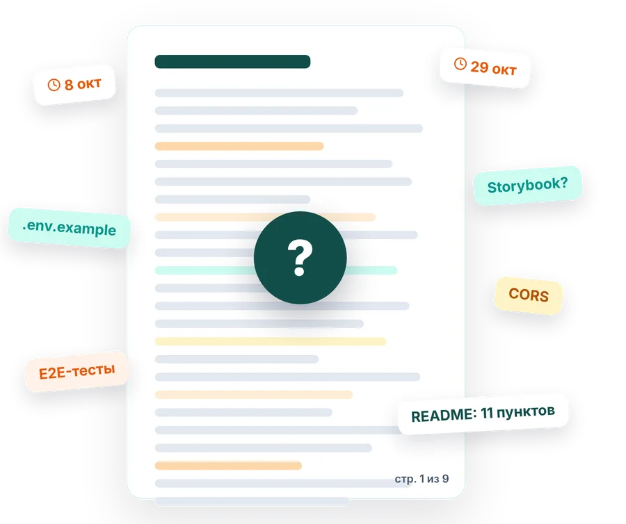
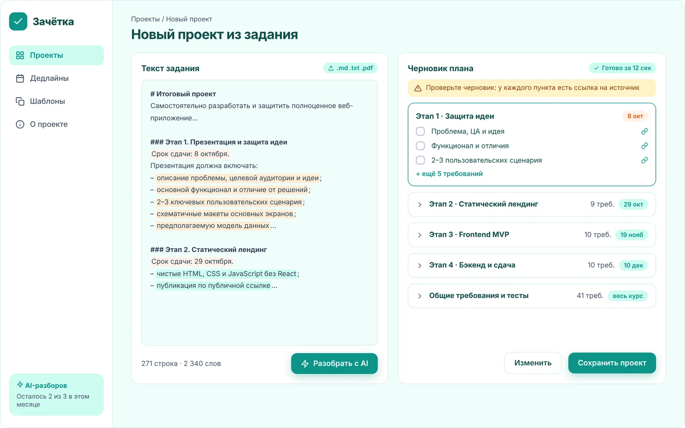
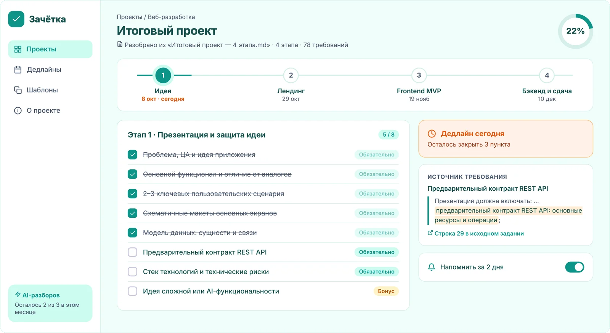

AI-планировщик учебных проектов
Зачётка
От 271 строки задания — к понятному плану сдачи. Вставь текст, получи этапы, дедлайны и чек-лист. У каждого пункта — цитата из исходника.
- Бесплатно для студентов
- Работает в браузере
- Источник каждого пункта
требований в задании —
один понятный чек-лист
Проблема
Требования теряются в тексте задания
Задание нашего курса
~80
требований в одном документе
Объём
271
строка текста
Сроки
4
дедлайна за 2 месяца

Баллы теряются на мелочах
Забытый .env.example, тест на ошибку валидации, команда запуска E2E в README. Сложное помнят все — мелочи забывает каждый.
Как это работает
От задания — к плану в три шага
-
Шаг 1
Вставь задание
Текст или файл .md / .txt
-
Шаг 2
AI разложит его
Этапы, дедлайны и конкретные пункты
-
Шаг 3
Отмечай и сдавай
Перед сдачей видно, что не закрыто
Ключевая фича
У каждого пункта — цитата из задания
Видно, что AI ничего не выдумал: пункт без цитаты помечается для ручной проверки.

Демо
Попробуй разбор прямо здесь
Это упрощённый разбор в браузере, без нейросети: он находит этапы, сроки и пункты списка. В приложении работает AI с проверкой цитат.
Нажми «Разобрать» — здесь появится план по этапам
Возможности
Всё, чтобы сдать без потерянных баллов
-
AI-разбор задания
Нейросеть отвечает строго по JSON-схеме, сервер сверяет каждую цитату с исходным текстом. Ничего не сохраняется без твоего подтверждения.
Источник пункта
Цитата и номер строки в задании
Шкала этапов
Дедлайны и прогресс каждого этапа
Готовность к сдаче
Процент и список незакрытого
Экспорт в README
Чек-лист в Markdown одной кнопкой
Шаблоны для преподавателей
Одно задание — весь поток в один клик
Интерфейс
Проект и готовность к сдаче

Сравнение
ChatGPT разбирает один раз. Зачётка ведёт до сдачи
| Возможность | Notion | ChatGPT | LMS | Зачётка |
|---|---|---|---|---|
| Сам разбирает задание | нет | да | нет | да |
| Хранит прогресс по пунктам | да | нет | частично | да |
| Дедлайны по этапам | частично | нет | да | да |
| Показывает источник пункта | нет | нет | нет | да |
Тарифы
Бесплатно, пока учишься
Free
0 ₽
3 AI-разбора в месяц и весь чек-лист
Pro популярный
149 ₽/мес
Безлимит разборов и напоминания в Telegram
Преподавателям
0 ₽
Шаблоны заданий на весь поток
Вопросы
Частые вопросы
Что если AI ошибётся?
У каждого пункта есть цитата из задания. Если цитата не нашлась в тексте, пункт помечается для ручной проверки. Черновик всегда можно поправить до сохранения.
Чем это лучше, чем спросить ChatGPT?
ChatGPT разберёт задание один раз, а список потеряется в истории чата. Зачётка хранит прогресс, считает готовность этапов и показывает источник каждого пункта.
Какие файлы можно загрузить?
В первой версии — текст, Markdown и .txt. Поддержка PDF появится позже.
Это бесплатно?
Да: три AI-разбора в месяц и все функции чек-листа бесплатно. Для преподавателей шаблоны бесплатны всегда.
Сдавай без потерянных баллов
Оставь почту — пришлём приглашение, когда откроем доступ.